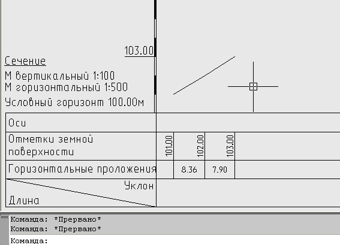
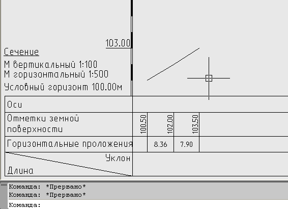

Команда: profile_draw_dimension_in_basement
Команда: profile_draw_dimension_in_basementВычисляет параметры (длины, уклоны, отметки) линии на профиле и помещает в указанную строку подвала
Команда сродни Вычислить линию на профиле только работает не с полилинией а с двумя точками и со строками подвала подразумевающими измерение длинны и/или высоты т.е. Глубина заложения, Горизонтальное проложение, Длина/Уклон.
Предпологается использование в ситуациях "ё-моё, тут еще длину(глубину) добавить надо", чтобы не стирать и заново строить всю строку. Или когда рисование отдельной полилинии долго и не нужно.
Два основных режима работы:
Вариант 1. Указываем на профиле две точки, указываем строку подвала куда надо вставить измерение.
Команда: profile_draw_dimension_in_basement
 Текущий профиль: имя текущего профиля
Текущий профиль: имя текущего профиля
Укажи первую точку:
 указывает измеряемую точку
указывает измеряемую точку
Укажи вторую точку:
указывает измеряемую точку
Укажи заполняемую строку подвала:
подвал заполняется в соответствии с данными точками, в случае с глубиной заложения основной будет принята первая точка вторая будет использоваться для вычисления превышения(т.е. подпись в подвале будет под первой точкой).

Вариант 2. Этот вариант специально для тех у кого в профиле нарисовано одно, а в подвале отметки "немного подправлены", если запрашиваемые точки указать в подвале профиля программа дополнительно запросит тексты с отметками для вычисления превышения(в случае указания строки горизонтального проложения запроса отметок не будет).
Команда: profile_draw_dimension_in_basement
Текущий профиль: имя текущего профиля
Укажи первую точку:
указывает точку в профиле в той строке которую будем заполнять
Укажи вторую точку:
указывает точку в профиле в той строке которую будем заполнять (в случае с выбором первой точки в строке глубина заложения вторую точку не спросит, а сразу перейдет к отметкам).
Выбери текст с первой отметкой:
указывает текст с первой отметкой, та которая соответствует первой точке
Выбери текст со второй отметкой:
указывает текст со второй отметкой, та которая соответствует второй точке
в подвал добавляется измерение в соответствии с полученными данными
